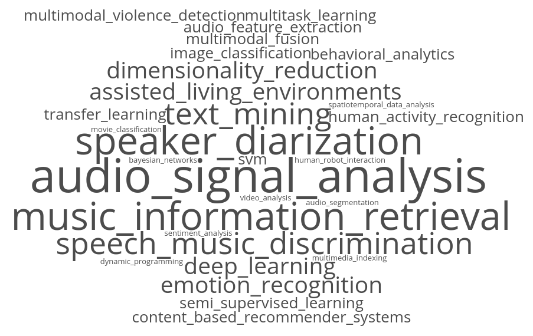

| Name | Theodoros Giannakopoulos (full pdf CV here)
|
| Current Occupation | - Director of Machine Learning at Behavioral Signals
- Postdoc scholar, supported by State Scholarships Foundation (ΙΚΥ), at NCSR Demokritos |
| Education |
2002, Diploma of Informatics and Telecommunications, University of Athens 2004, M.Sc. of Signal and Image Processing, University of Patras 2009, PhD @di.uoa.gr, University of Athens.
Supervisor: Prof. S. Theodoridis
|
| Achievements | >100 publications, >2500 citations, 24 h-index (gscholar) 2 best paper awards (MMSP2007 and ICMLA2010) 13 open source Matlab submissions at Mathworks File Exchange. Top 0.3% rank (over 30K Matlab users) 9 open source Python repositories submitted at github. Top 0.2% rank (over 0.6M Python users) |
| Worked@ | 2002, Institute of Child Health, University of Birmingham, Research Intern 2003-2004, Wire Communications Lab, University of Patras, Research Assistant 2004-2009, Dept of Informatics and Telecommunications, University of Athens, Research Assistant 2004-2006, International Society for Pediatric Neurosurgery - ISPN , webadmin 2008-2011, European Association for Signal Processing - Eurasip , webadmin 2009-2018, IIT, NCSR Demokritos, Research Associate 2012-2015, IMIS, Athena Research Center, Research Associate 2015, thebitbite.com, Machine Learning Engineer 2017, entefy.com, Audio Engineer (freelancer) 2017, soundsnap.com, Machine Learning Engineer (freelancer) 2017 - today Behavioral Signals, Director of Machine Learning |
| Scientific Interests | 
|
| Hobbies | getting high in the morning buying things off the internet |